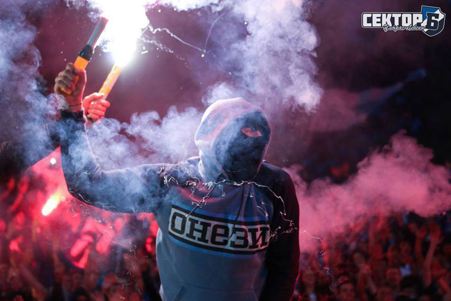

Interview with Blue Hunta Levski Sofia
About the group, activities and relations with other groups.
ADMIN / Interviews / 29.09.2018 / Images: Blue Hunta, Facebook, SectorBvideo / Source: Ultras-bulgaria.net
Hello, introduce yourself.
- My name is Ivo. I'm a bit older than the other guys in the group, so they have accepted me as a leader, but I'm not acting like some boss.
I devoted myself to the idea "Levski" and in particular Blue Hunta. I want everything to be perfect, but it is not always as I wish.
Tell us more about Blue Hunta.
- The group was made in 2010. It is one of the youngest groups in Sector B. We are currently between 30-40 people. Our age range from 18 to 25. We have our own club in downtown Sofia. Our vies are far-right and we hate people with weak characters, such as "women in men clothes".
What kind of people are members of the group? What is your position in the sector?
- In our group there are both ultras and hooligans. Everyone is trying to help with whatever he can. Currently our ultras guys are doing most of the choreographies in the sector. Another group is taking care to organise the singing - South Division, and they are doing great job. The biggest group is Sofia West.
Tell us about the activity of your group outside the stadium.
- We are very active in and outside the stadium. Ultra-view boys are doing a lot of graffiti, while the hools are doing same good job by terrorising our biggest enemy in pink(CSKA). Actually they don't skip to fight everyone, we hate pretty much everyone in here. We also gather often to discuss different ideas.
- What is your attitude towards others in the sector, and whats theirs towards you?
- We feel everyone in our sector as brother, but we think not everyone likes us, but we dont care.
Best tifo made by you?
- The best is yet to come.
How do you see the future of the group?
- To continue in the same spirit as now. Growing more and more as a group and becoming stronger and stronger.
Where do you want Levski to play away in Europe?
- We prefer the Balkans, because we don't like any of the countries around us. Everyone on Balkan hate everyone, you know. But wherever we have to play, we will fight all the way for our team. So far our group had no loss in any visit.
Do you support the National Team of Bulgaria?
- Yes, of course. Long live Bulgaria.
Your final words?
- Thanks for interest in us, greetings to your site and have a nice holidays to all the readers. Forza Levski!